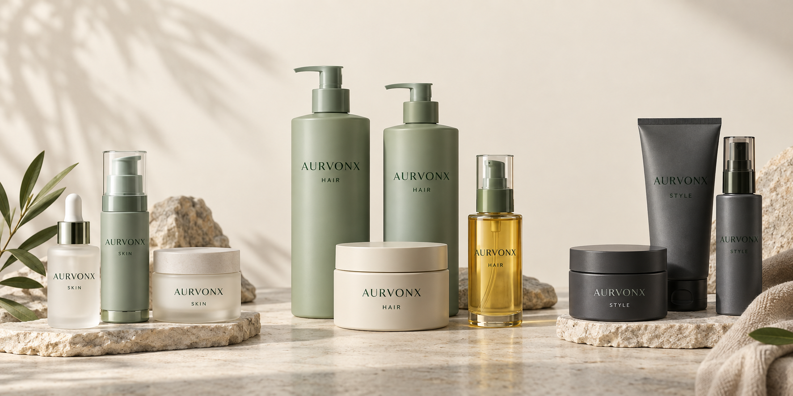

Dark spot appearance care: how to evaluate a tone serum brief
An uneven-tone brief needs a defined endpoint: visible marks, patchiness or overall tone uniformity. These are not interchangeable, and a cosmetic catalogue should not promise to treat melasma.
Choose the right product formats
Use a cleanser, one lead tone serum and a moisturizer as the starter kit. Keep the PHA essence optional; it should not automatically be layered with every active serum.
Understand the ingredients
Ingredient identity and formula context matter when comparing products. Read the linked ingredient notes and original sources alongside the collection guide.
Niacinamide / · Tranexamic acid / · Alpha-arbutin / α · Botanical comfort ingredients / 、β · Panthenol / B5 · Vitamin C derivatives / C
- Topical tranexamic acid trial · Janney et al., 2019Primary clinical study; patients with melasma, not AURVONX products
- Alpha-arbutin and beta-arbutin safety · SCCSIngredient safety opinion; not efficacy certification
Build a useful collection
Cleanse, use one selected tone serum, then cream. The alpha-arbutin serum is an alternative, not a mandatory extra layer.
CLARITY set · View the collection
Plan your private-label range
Begin with a clear customer need and choose formats with distinct roles. Compare application preferences, packaging and the place of each product in the routine. Your destination market and sales channel should guide the final assortment.
Discuss your range